Halo lagi, Detektif!
Hari ini kamu naik level: menilai, membongkar jebakan, memeriksa pengaturan, dan merancang privasi. Baca halaman ini setelah menyelidiki di kelas. Semua kasus fiktif; jangan tulis data asli siapa pun.
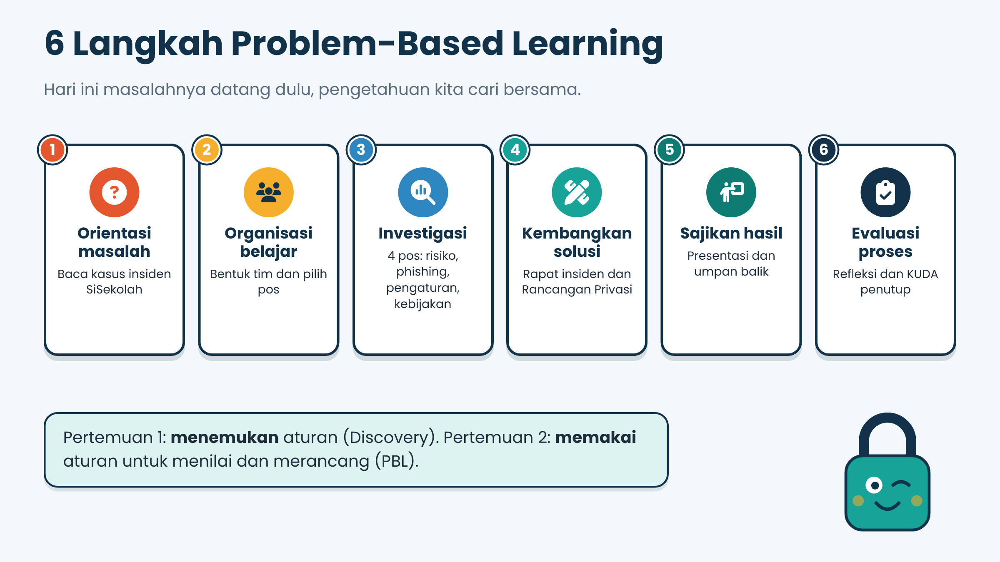
1. Kasus: Nilai Tersebar di Grup Terbuka
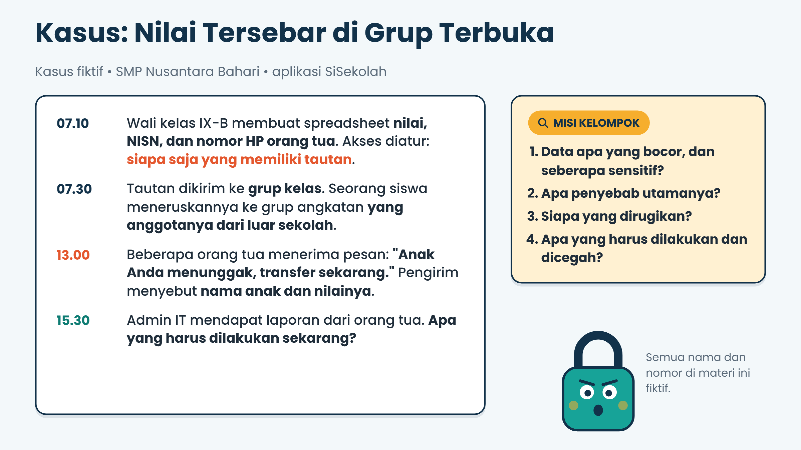
Tidak ada peretas hebat di sini. Yang salah: akses "siapa saja yang memiliki tautan", tautan yang diteruskan, dan data kontak yang akhirnya dipakai penipu.
Tulis dugaanmu dulu di LKPD bagian A, baru lanjut.
2. Empat Tingkat Sensitivitas
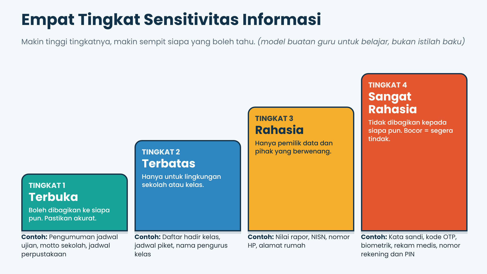
Kerangka buatan guru untuk belajar, bukan istilah baku.
Coba: tingkat berapa?
3. Matriks Risiko
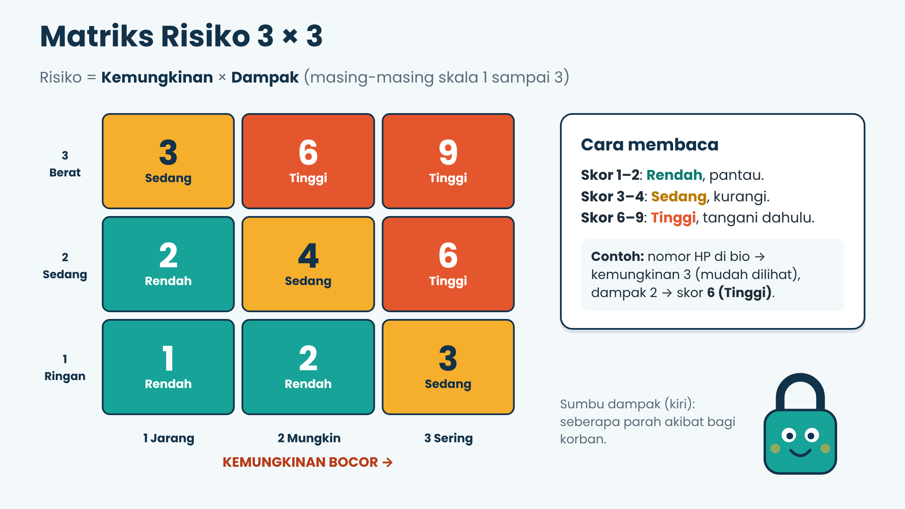
Risiko = Kemungkinan × Dampak (skala 1–3). Skor 1–2 rendah, 3–4 sedang, 6–9 tinggi.
Coba: hitung risikonya
4. Jebakan dan Phishing
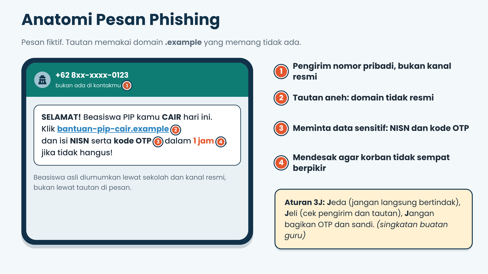
Aturan 3J (buatan guru): Jeda, Jeli, Jangan bagikan OTP dan sandi.
Detektif pesan: jebakan atau asli?
Pesan dan domain fiktif.
5. Lima Kunci Privasi
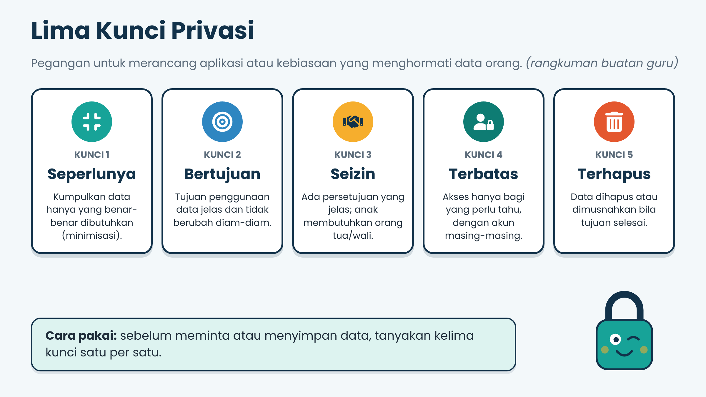
Audit pengaturan akun "Dimas"
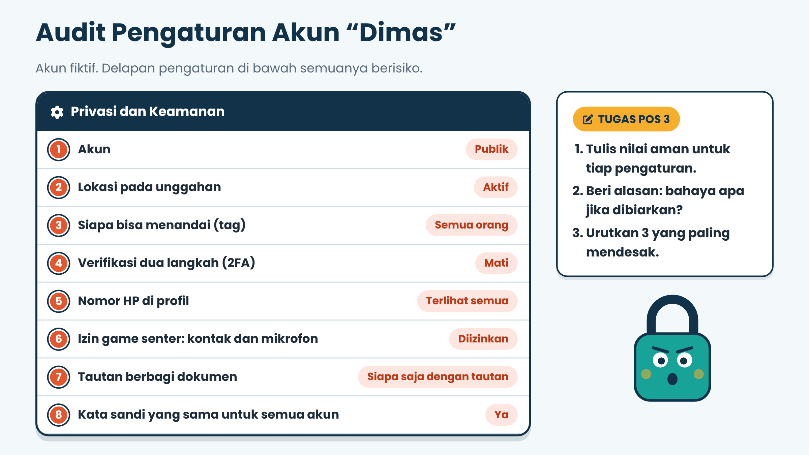
| No | Pengaturan | Nilai aman |
|---|---|---|
Baca kebijakan privasi "BelajarKu"
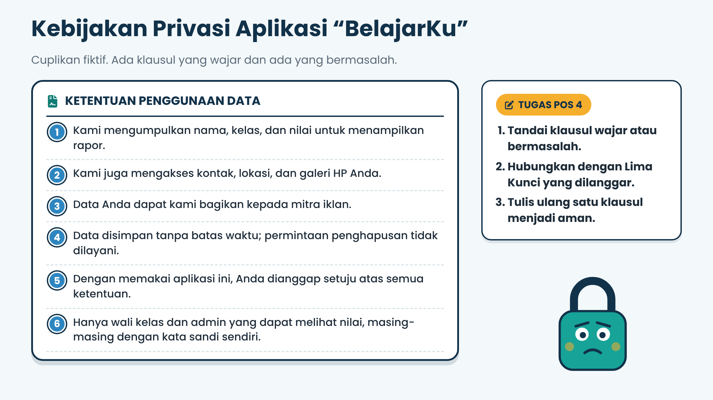
6. Hak Pemilik Data
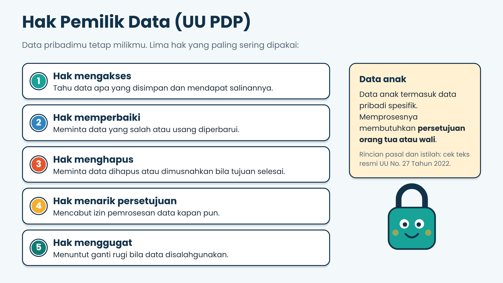
Rincian pasal UU No. 27 Tahun 2022 sebaiknya kamu cek di teks resmi.
7. Kalau Data Sudah Bocor
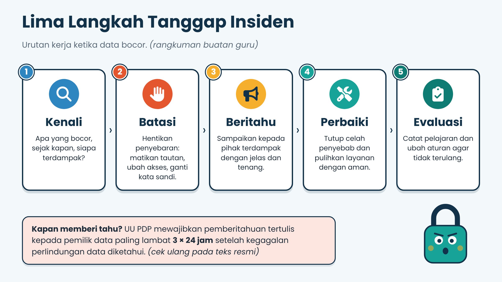
Contoh pengumuman yang baik: "Telah terjadi kebocoran data nilai kelas IX-B. Mohon abaikan pesan penagihan yang menyebut nama anak Bapak/Ibu dan jangan membagikan kode OTP. Tautan sudah dimatikan dan kami sedang memperbaiki sistem."
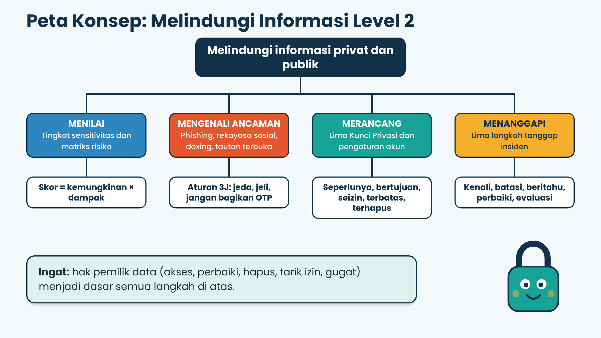
8. KUDA: Kuis Dadakan
9. Janji Level 2-ku
- Aku tidak membagikan kata sandi dan kode OTP kepada siapa pun.
- Aku berhenti sejenak sebelum mengeklik tautan yang mendesak.
- Aku memeriksa izin aplikasi dan mencabut yang tidak perlu.
- Aku tidak membuka data orang lewat tautan "siapa saja".
- Aku membantu temanku yang jadi korban, tanpa menyalahkan.